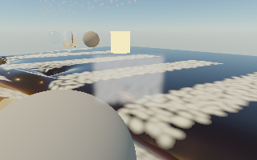
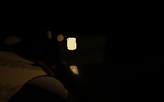
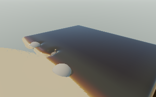

November 13, 2026 · AMD Radeon Pro 560X · Deno 2.9.8 / native wgpu / Metal
Bounds are numerically conservative, but no whole-scene performance gain was established. All variants remain isolated and disabled in the normal scene. Six bounded playback runs completed without a reported graphics failure. Historical scenes, physics, saved edits and live defaults are unchanged.
An 8 × 8 grid stores conservative terrain ceilings, computed with one small GPU reduction when ground geometry changes. The existing terrain uses positive cubic B-spline weights, so the maximum supporting control height bounds the entire surface in a tile. A small margin covers rounding and hit tolerance. Boundary tiles extend outward to match clamped terrain sampling. A bounded grid traversal proves which ray intervals are empty; the original terrain sampler, sand CSG, normals and hit refinement still resolve actual surfaces.
Raised/carved parcels retain their existing conservative bounds. Opaque bodies, including the boulders and cups, use conservative bounding spheres when proving a complete miss; this is not a new boulder geometry cache. The primary edge mirage deliberately depends on ray stepping, so advancing those rays would change the requested look.
GPU and CPU ceiling construction are both implemented. Terrain above the bounded 256 × 256 input capacity retains original tracing. Camera motion and wetness-only changes do not rebuild the cache. The wind-driven playback workload does change ground geometry: the final run rebuilt bounds 96 times across its warm-up/playback, adding a small compute pass. Earlier raw files record the initial warm-up counter, not that final total. Cached ceilings occupy 256 bytes; tracked rendering allocations round to 49.82 MiB for both paths.
640 × 400 native window, fixed 320 × 200 scene rendering, 3,024 water markers, 144 ground edits, patterned organic foam and wind 12 m/s. CPU/Wasm water pressure/transfer/transport and sand/body/player physics remain the current reference policy; rendering, air/fine particles and candidate terrain reduction run on the GPU. Rain, tides and day/lunar cycling are off. Each ordinary 60-FPS-capped application run lasts 96 frames. Discarding 16 warm-up frames leaves 79 wall-time intervals and 10.467–10.533 simulated seconds per run. These rates include simulation and presentation, not just a selected rendering pass.
| Run / raw data | FPS | Realtime | p95 frame ms | Frame σ ms |
|---|---|---|---|---|
| reference-a | 6.296 | 0.834× | 185.5 | 13.5 |
| reject-a | 6.150 | 0.820× | 188.3 | 12.0 |
| advance-a | 6.204 | 0.827× | 183.5 | 11.0 |
| secondary-a | 6.250 | 0.833× | 185.5 | 12.0 |
| reference-b | 6.259 | 0.835× | 179.9 | 11.0 |
| secondary-b | 6.214 | 0.829× | 185.1 | 10.7 |
Pooled original: 6.278 FPS / 0.834× realtime. Pooled final secondary variant: 6.232 FPS / 0.831× (−0.73% FPS, −0.41% simulation throughput). There is no consistent p95 or variance improvement. The other variants are also slower in their single trials. Short sequential runs do not establish performance on RTX hardware, longer sessions or higher image resolutions. Native GPU timestamps are unavailable on this adapter/runtime, so the measurements do not attribute the difference to a specific GPU instruction. Computed summary.
Twelve GPU/CPU cases cover six terrain resolutions from 2 to 256 and fresh edits; maximum ceiling error is zero. CPU tests sample 20,000 cubic-height locations and 5,000 rays, including outward-clamped terrain, parallel rays, exact tile boundaries, inside origins and corner traversal. Rebuilds, reset, CPU fallback, capacity limits and guarded disposal are covered. 30 focused tests and both web/native builds pass.
Twelve frozen views per variant cover the beach, carved sand and multiple object materials/shapes, visible foam/grains/droplets, four camera positions, underwater, night, sky and a larger reset. Every reference repeat is pixel-identical, and all outputs are finite. The reject-only variant differs by at most 1.21e-10 mean linear RGB. The advance and final secondary variant reach a worst mean RGB error of 0.000456, below the 0.002 check gate. They are not pixel-identical: the worst view has 347 of 192,000 RGB components differing by more than 0.01, with maximum component error 0.497, localized near secondary-ray edges. Primary mirage stepping remains original. Frozen-view bounds rebuild counts are one at initialization, two after ground editing and three after the larger reset; camera changes do not rebuild them.




Do not enable these bounds by default. Conservative empty-space rejection is a useful correctness building block, but this grid and workload do not repay the extra traversal/preparation in whole-scene throughput. Keep the source and evidence to avoid repeating the same experiment as an assumed optimization.
Full sparse 3D surface bricks, a hierarchy for boulder geometry, sustained complex raised/carved structures, CPU-construction performance and higher resolutions remain untested. Before expanding this approach, measure actual skipped distance/query work in a workload where the hierarchy could save substantial work. The next priority returns to the existing CPU/GPU state handoff and duplicated water reconstruction: remove whole transfers or repeated work while preserving the feature consumers, rather than adding another small preparation pass. These leads are recorded in the backlog; no unrelated changes were made here.
npm run build:native node --test tests/empty-space.test.js .native/tools/deno run --config native/deno.json --allow-read --allow-write=.native native/empty-space-numeric.js .native/tools/deno run --config native/deno.json --allow-read --allow-write=.native --allow-env --allow-sys --allow-ffi native/empty-space-check.js secondary .native/tools/deno run --config native/deno.json --allow-read --allow-write=.native --allow-env --allow-sys --allow-ffi native/empty-space-bench.js reference busy trial .native/tools/deno run --config native/deno.json --allow-read --allow-write=.native --allow-env --allow-sys --allow-ffi native/empty-space-bench.js secondary busy trial
Run one graphics process at a time. Existing memory limits, compilation/completion deadlines and one-outstanding-frame guard remain in place. This report starts no graphics work.